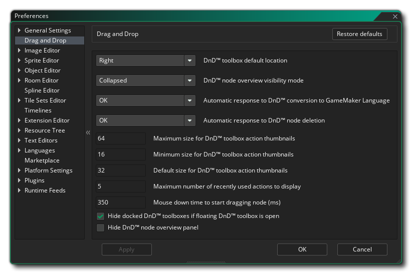

拖拽按钮偏好设置用于定义拖拽按钮脚本编辑器的外观。下面列举了各种可用选项及每一个的描述。
- DnD™ 工具栏默认位置：默认情况下 DnD™ 工具栏 (其中保存了所有不同的动作库) 位于编辑器的右侧，但是你可以使用此选项将其默认设置为左侧。
- DnD™ 节点概述可见模式: 节点“概述”是出现在动作工作区中的某些动作旁边的简短描述性文本，例如 Destroy Instance 这个动作：
 你可以选择总是启用、仅在动作折叠时显示（默认设置）或完全禁用。
你可以选择总是启用、仅在动作折叠时显示（默认设置）或完全禁用。
- 自动响应 DnD™ 转换为 GameMaker Language: 当你将拖拽事件或脚本转换为GML代码时，默认情况下会收到一条警告消息询问是否继续。将该选项设置为"确定"就会不显示这条警告信息而直接进行变动。
- 自动响应 DnD™ 节点删除: 当你删除拖拽事件节点时，默认收到警告消息询问是否继续。将该选项设置为“确定”就会不显示这条警告信息而直接删除。
- DnD™ 工具栏动作缩略图的最大尺寸: 在动作工具栏的底部有一个滑块来改变拖拽图标的大小。这项设定将被用于定义允许的最大尺寸（默认为64像素）。
- DnD™ 工具栏动作缩略图的最小尺寸: 在动作工具栏的底部有一个滑块来改变拖拽图标的大小。这项设定将被用于定义允许的最小尺寸（默认为16像素。）
- DnD™ 工具栏动作缩略图的默认尺寸: 这项设定将被用于定义工具栏中所有动作图标的默认大小（默认为32像素）。
- 最近使用动作的最大显示数目: 在动作工具栏的顶部有一个最近使用动作的收藏夹。你可以使用这个选项来改变最近使用的动作的最大显示数量（默认为5）。
- 鼠标按下到开始拖动节点所需的时间（毫秒）: 当你点击一个节点并拖拽它时，你将重新定位动作代码中的节点。然而如果按住鼠标一段时间后再移动，你会移动工作区中节点的位置而 不是 代码的顺序。这个设定设置了在节点能够被移动之前需要等待鼠标按下的毫秒数（不重置）。默认值为350。
- 隐藏 DnD™ 节点概述面板: 使用该选项你可以隐藏动作代码编辑器的概述面板。默认该选项是禁用的，启用它将会移除编辑器左侧的纯文本动作链